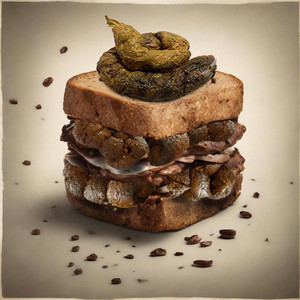
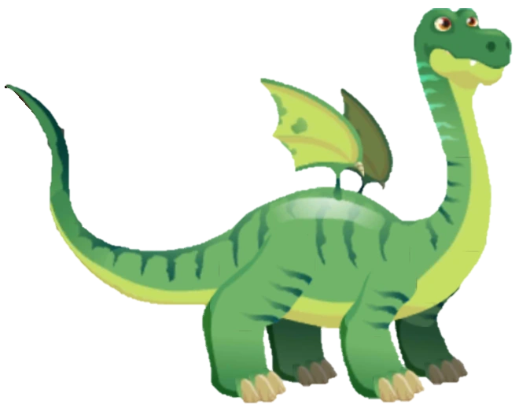

Bajsmackor
Kort artikel om bajs, innehåll kommer snart... Typ nu

Bajsmackornas fader – Scedrick från Rivieran
I den annars glamorösa världen av Cannes och Monaco, där lyxyachter och exklusiva restauranger dominerar gatubilden, har en man lyckats skapa rubriker med något helt annat: bajsmackor.
Mannen bakom fenomenet heter Scedrick, en lokal karaktär som hävdar att hans skapelse är både ett kulinariskt experiment och en satir över den lyxiga matkulturen på Rivieran.
Med glimten i ögat serverar han sina “mackor” vid små spontana events, ofta till publikens blandade reaktioner av skratt, förvirring och… ja, viss misstänksamhet.
“Det handlar inte om smak, utan om ett statement,” förklarar Scedrick, som själv beskriver sina kreationer som konst snarare än mat. Och även om bajsmackorna knappast kommer att hamna på Michelinstjärniga menyer i Monaco, har de redan blivit en snackis i regionen – bokstavligt talat.
Snälla draken
Historien om den stora snälla draken

Kapitel 1
Det var en gång en drake som gillade att vila under ett träd. Draken hette Brulle och han bor i ett slott mitt i ingenstans. Ingen har någonsin vågat gå in i slottet för när dem såg Brulle blev dem jätteskraja och sprang sin väg hem igen! Men draken ville inte vara läskig. Brulle var en snäll drake. Men det visste förstås inte människorna.
Men en dag tänkte Brulle: Jag ska gå ut i skogen och hitta en person och säga att jag inte är farlig! Tänkte han. Men Brulle visste inte vad som väntade honom. Men Brulle gick till slut ut i skogen och han träffade på många olika varelser. Brulle såg en katt, ko, hund, alien, bebis som grät och en liten, liten igelkott. Draken kom till slut fram till en by där han såg personer som gick dit och hit. Han gömde sig bakom en sten men en person såg honom iallafall. Människan sa: Hörru vad gör du här din tjocka drake! Sa han. Jag är inte tjock. sa brulle. Jag är faktiskt jättesnäll och smal för att vara en drake. Okejdå! sa snubben. Då ska jag inte skada dig. Tack! sa brulle. Och sedan gick brulle hem till slottet igen. Slut…
Vincent
Historien om Vincent

Vincent van Gogh, född 30 mars 1853 i Zundert , Nederländerna, är en av konsthistoriens mest inflytelserika och tragiska figurer. Hans liv präglades av starka känslor, psykisk ohälsa och en oerhörd kreativitet som trotsade hans ofta svåra ekonomiska situation. Van Gogh började måla sent i livet, i slutet av 1880-talet, men hans produktion var intensiv och kraftfull. Under sitt korta konstnärskap skapade han över 2 000 verk, inklusive omkring 900 målningar, däribland några av världens mest ikoniska verk såsom Stjärnenatt, Solrosor och Sovande bonde.
Hans konst kännetecknas av starka färger, dynamiska penseldrag och ett emotionellt uttryck som speglar hans inre turbulens.
Van Gogh sökte att fånga både det yttre landskapet och det mänskliga sinnets djup. Trots sin talang och innovation levde han i fattigdom och social isolering. Hans relationer var ofta komplicerade, och han hade särskilt svårt att finna balans mellan sin konstnärliga ambition och psykiska ohälsa. Den kända episoden där han avskar sitt öra är både tragisk och symbolisk för den kamp han levde med dagligen.
Van Goghs liv avslutades tragiskt den 29 juli 1890, vid endast 37 års ålder, då han dog av ett skottskada som många tror var självmord.
Hans konstnärliga arv har dock haft en enorm inverkan på efterföljande generationer av konstnärer och betraktare. Genom sina verk har van Gogh visat hur konst kan fungera som både terapi och uttryck för mänsklig sårbarhet. Idag betraktas han som en symbol för kreativ passion, uthållighet och den tragiska konflikten mellan genialitet och psykiskt lidande. Hans verk fortsätter att fascinera och beröra världen, ett testament över ett liv som, trots sina mörka stunder, brann intensivt för konst och skönhet.
Om du vill kan jag skriva en ännu mer detaljerad och analytisk version som fokuserar på hans konststil och tekniker. Vill du att jag gör det?